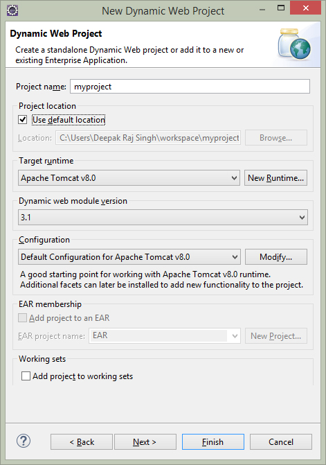

1.6 Creating Servlet in Eclipse
This section guides you through the creation of a Java servlet. The instructions in this section show you how to write the servlet in Eclipse and deploy it to the Tomcat web server.
The servlet that we create in this section simply generates a Web page that says Hello World! This simple exercise will help you understand the basic structure of servlets, how to develop them in Eclipse, and how to deploy them in Tomcat.
Project Creation
We will develop the servlet inside an Eclipse project called myproject. The following steps show how to create a new Eclipse project that can be used to develop servlets.
1. Select File... New... Project.
2. Choose Dynamic Web Project and click the Next button.
3. Set the Project name to myproject. Select Target runtime and version. Click the Finish button.

A new project has been created with the standard structure of a Java web application.
Creating the Servlet
4. To create a servlet, rightclick on your project and select New → Servlet. Enter the following data and click next button.
5. Note that the Class Name value provided in the first page of the wizard is automatically mapped to the Name field on this page.
In the URL Mappings field, specify the URL pattern to be mapped with the servlet. By default it is mapped the same name as class name. To edit the url mapping name, click the edit... button.
6. Change HelloWorld with hello. Click OK button then Next button.
7. Select the doGet option by checking the appropriate checkbox. Click Finish Button.
The following code will appear.. (comments are removed)
8. Paste the following code in the body of the doGet method.
PrintWriter out = response.getWriter();
out.println("Hello World!");
9. When you enter this code, observe the red error line on the PrintWriter. You need to import this class. Hover over the red line with the mouse and click on import 'PrintWriter' (java.io) as shown in the following screen shot.
Now our first servlet is created in eclipse enviornment. Here is the final code.
package testPackage;
import java.io.IOException;
import java.io.PrintWriter;
import javax.servlet.ServletException;
import javax.servlet.annotation.WebServlet;
import javax.servlet.http.HttpServlet;
import javax.servlet.http.HttpServletRequest;
import javax.servlet.http.HttpServletResponse;
@WebServlet("/hello")
public class HelloWorld extends HttpServlet {
private static final long serialVersionUID = 1L;
protected void doGet(HttpServletRequest request,
HttpServletResponse response)
throws ServletException, IOException {
PrintWriter out = response.getWriter();
out.println("Hello World!");
}
}Deployment of the servlet
10. You application must be deployed to the server and started there. Select your servlet or your project, right click on it and select Run As → Run on Server from the context menu and select your existing server.
Ensure your servlet is selected to run on the server.
11. Click on Finish. If the deployment was successful you should be able to access your servlet via the following URL: http://localhost:8080/myproject/hello

In the next chapter we'll learn about basics of servlet in details..